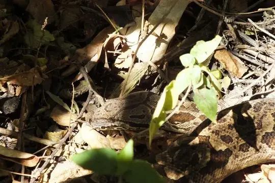
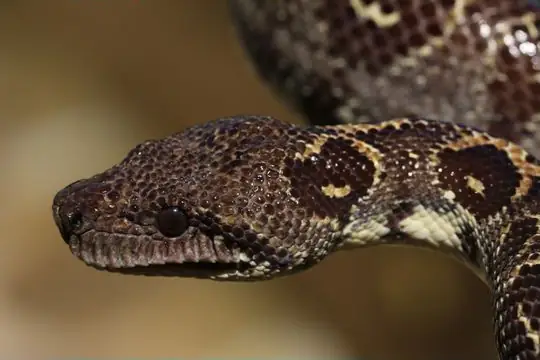
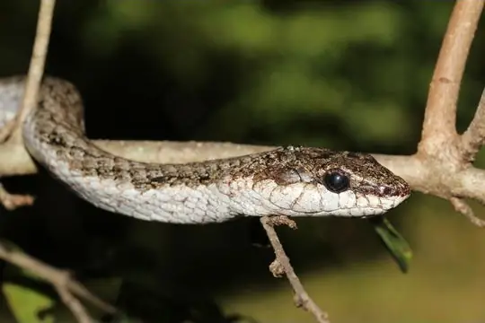

Snakes of Ihorombe
A state or province of Madagascar
10 snake species are recorded in Ihorombe, a state or province of Madagascar, in SnakeList: 0 venomous and 10 non-venomous, from 4 families.
- 10species
- 10non-venomous
- 4families
SnakeList records where snakes live by country and by state or province, not by exact spot, so a species listed here may live in only part of Ihorombe. All snakes of Madagascar.
Most widely recorded
The species here that have research-grade iNaturalist records in the most places across their whole range - not just in Ihorombe. That shows how often people have photographed them, not how many live here.
 Madagascar Night SnakeMadagascarophis colubrinus
Madagascar Night SnakeMadagascarophis colubrinus Bernier's Striped SnakeDromicodryas bernieri
Bernier's Striped SnakeDromicodryas bernieri Pencil SnakeMimophis mahfalensis
Pencil SnakeMimophis mahfalensis Lateral Water SnakeThamnosophis lateralis
Lateral Water SnakeThamnosophis lateralis
Dumeril's BoaAcrantophis dumerili
Nosy Komba boaSanzinia volontany Cat-eyed Snake (meridionalis)Madagascarophis meridionalis
Cat-eyed Snake (meridionalis)Madagascarophis meridionalis
Southwestern Night SnakeIthycyphus oursi
Snake families
Venomous and non-venomous
Venomous: 0Non-venomous: 10
Habitats (rough estimate)
How many of its living snakes have each kind of habitat in SnakeList’s estimate. That estimate comes from every country, state and province where each snake is recorded - not from a survey of Ihorombe, and not checked species by species.
Who described them
The scientists who first described its most widely recorded snakes, and when.
- Madagascar Night Snake Madagascarophis colubrinus -
- Bernier's Striped Snake Dromicodryas bernieri -
- Pencil Snake Mimophis mahfalensis -
- Lateral Water Snake Thamnosophis lateralis -
- Dumeril's Boa Acrantophis dumerili -
- Nosy Komba boa Sanzinia volontany -
- Cat-eyed Snake (meridionalis) Madagascarophis meridionalis -
- Southwestern Night Snake Ithycyphus oursi -
Names and dates come from SnakeList’s reviewed species accounts; the others are looked up on Wikidata (CC0) when this page opens.
Neighbouring states and provinces
Places in SnakeList that share a border with Ihorombe.
- Anosy 18 species
- Atsimo-Andrefana 15 species
- Atsimo-Atsinanana 1 species
- Haute Matsiatra 19 species
All 10 species
- Bernier's Striped Snake Dromicodryas bernieri
- Cat-eyed Snake (meridionalis) Madagascarophis meridionalis
- Dumeril's Boa Acrantophis dumerili
- Lateral Water Snake Thamnosophis lateralis
- Madagascar Night Snake Madagascarophis colubrinus
- Nosy Komba boa Sanzinia volontany
- Ocellated Cat Snake Madagascarophis ocellatus
- Pencil Snake Mimophis mahfalensis
- Sand Worm Snake (arenarius) Madatyphlops arenarius
- Southwestern Night Snake Ithycyphus oursi
No snake here matches that.